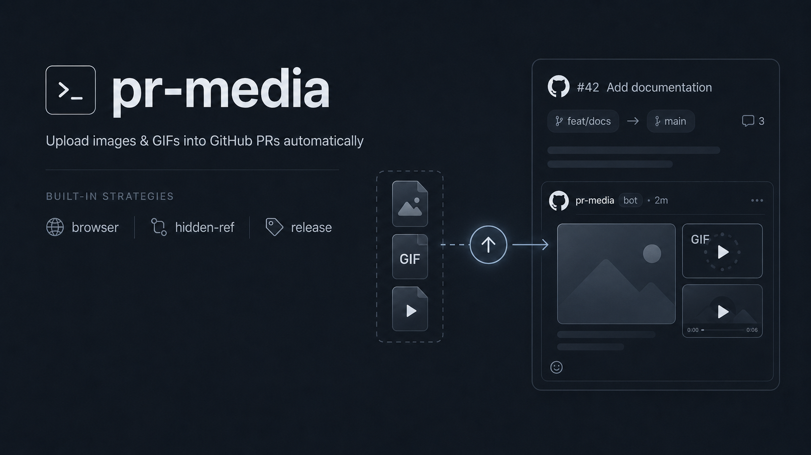
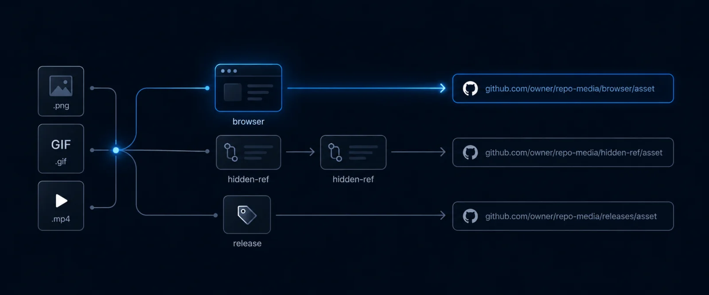
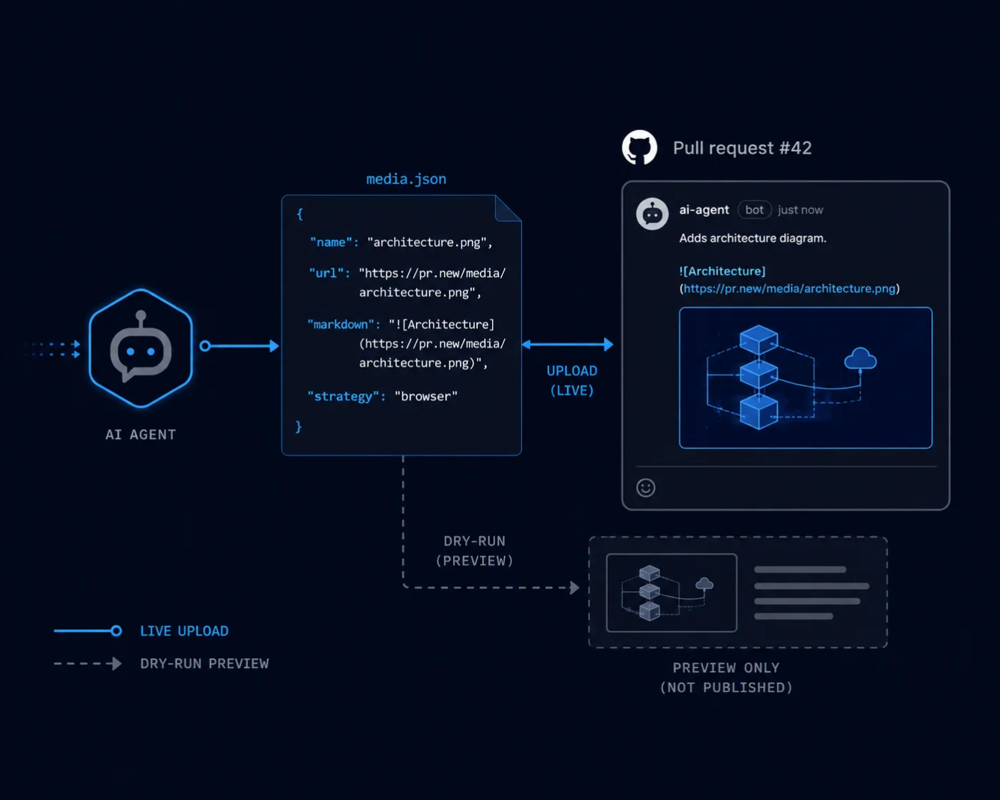

pr-media
Upload images & GIFs into GitHub PRs, automatically.
Attach images, GIFs, and videos to a GitHub pull request from a script, a CI job, or an AI agent. No browser cookies, no API that doesn't exist.
From a file on disk to a rendered PR comment

Getting media into a PR is harder than it should be
Dragging a screenshot into the web composer is easy. Doing it from a script, a runner, or an agent is where GitHub leaves you stranded.
There is no API for it
GitHub has no public REST or GraphQL endpoint to mint the user-attachments/assets URLs the web UI hands out. "Just call the API" isn't an option.
The web endpoint wants a cookie
The internal upload endpoint only accepts a browser session cookie. A personal access token gets a flat 422. It's a deliberate anti-abuse boundary.
Existing tools steal that cookie
The workarounds extract your user_session cookie and replay it, handing out a bearer credential for your entire GitHub account. pr-media doesn't.
Pick a URL shape, or let auto choose
Each strategy makes a different, honest tradeoff between the URL it produces and the privacy it inherits. All three are cookie-free.
| Strategy | Auth | Produces | Privacy | When to use it |
|---|---|---|---|---|
hidden-refDefault |
Scoped gh token (PAT / OAuth / GITHUB_TOKEN) via the Git Data API. No browser. |
…/blob/<sha>/file?raw=true |
Inherits repo ACL | Most workflows, including CI, with no interactive browser required. |
browser |
Your own, already-logged-in browser (agent-browser or CDP). The session is driven, never read. |
github.com/user-attachments/assets/<uuid> |
Inherits PR ACL | Interactive, local use when you want the exact URL a human dragging a file in would get. |
release |
Scoped gh token via a dedicated prerelease's assets. No browser. |
…/releases/download/… |
Always public | CI on public repos, or anywhere you explicitly want a public, cacheable URL. |
The auto fallback chain
By default, pr-media tries strategies in order and falls back to the next on failure. The order adapts to the environment — a headless CI runner has no interactive browser to reach for.

It never reads a cookie store. Not once.
gh token is. Extracting it means reading the browser's cookie store and passing it around, through shell history, logs, temp files. pr-media closes that path entirely.
Only scoped, gh-managed tokens
Every non-interactive call goes through the gh CLI. Authentication is entirely gh's problem. pr-media never writes a token to disk or logs one.
The browser strategy reuses your session, never reads it
It stages a file on the composer's input, reads back the URL GitHub inserts, clears the textarea, and never clicks Comment.
A CI guard enforces it
A security-guard check fails the build if cookie-related patterns (document.cookie, context.cookies(), cookie stores) show up under src/.
execFile, never a shell
External commands get their arguments as an argv array, never a shell string. No command injection via file paths, PR URLs, or repo names.
gh token
Repo-scoped, expiring, gh-managed — never written to disk.
gh token — and never reads your session cookie.Parseable output, a dry run, and a ready-made skill
pr-media ships an agent skill that teaches a coding agent which strategy to pick and how to read the output. Agents default to --json and can combine it with --dry-run to preview a plan before touching anything.
- Structured output. --json returns an array of { name, url, markdown, strategy }. No text to scrape.
- Dry-run first. --dry-run validates files and resolves the PR without uploading or touching it.
- Drop-in skill. One command installs the skill into a Claude Code agent.
$ pr-media add diff.png --pr-url …/pull/42 --json [ { "name": "diff.png", "url": "https://github.com/acme/app/blob/8f2a1/diff.png?raw=true", "markdown": "", "strategy": "hidden-ref" } ]

Watch a real upload land in a PR
A screen recording of one pr-media add command uploading an image to a live pull request, from the prompt to the rendered comment.
Three ways in
Requires gh, authenticated with gh auth login. No bundled browser; playwright-core is optional, only for the CDP browser backend.
Install once, get the pr-media binary on your PATH.
Then: pr-media add ./shot.png --pr-url https://github.com/acme/widgets/pull/42
Run it without installing anything.
Good for one-off use and CI steps that shouldn't leave a global install behind.
Install as a first-class gh extension and invoke it as gh pr-media.
Then: gh pr-media add ./shot.png --pr-url https://github.com/acme/widgets/pull/42